✨ Расширения для Visual Studio Code, которые поднимут процесс разработки на новый уровень
Jul 13, 2018 · 6 min read
Перевод статьи Indrek Lasn : “✨ Immensely upgrade your development environment with these Visual Studio Code extensions”
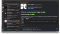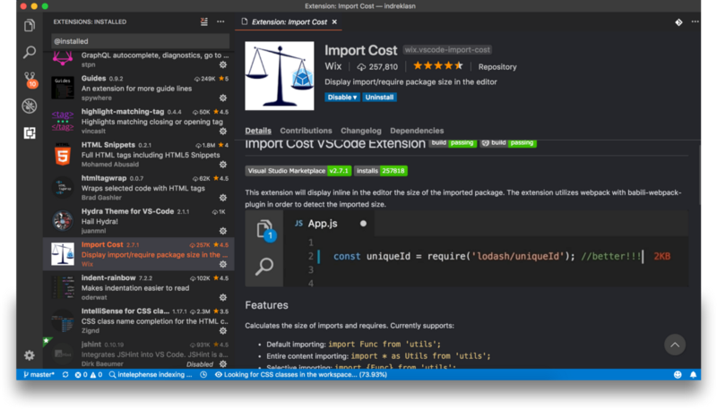
Visual Studio Code
Давайте поговорим о Code — Visual Studio Code.
Мои дорогие читатели попросили меня рассказать о тех расширения, которые я использую для разработки. Этим мы сейчас и займёмся.
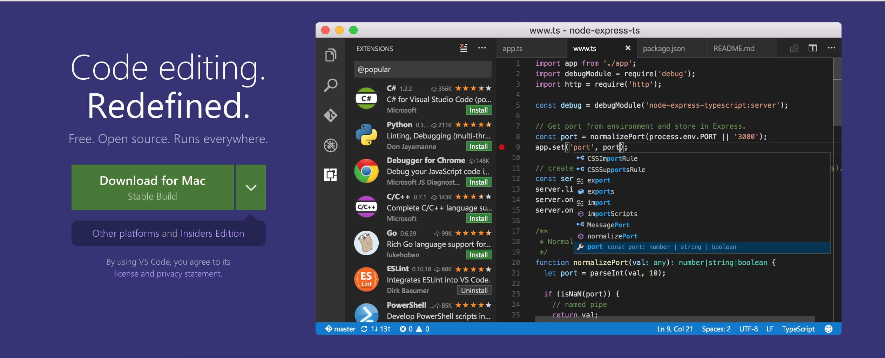
Ссылка на загрузку VSC:
https://code.visualstudio.com/
Наш VSC будет пятирогим лазеростреляющим единорогом —после того как мы снабдим его самыми полезными расширения, которыми я пользуюсь каждый день.
О, а если вы еще не используете замечательный редактор VSC, под картинкой выше есть ссылка на официальный сайт, с которого его можно загрузить.
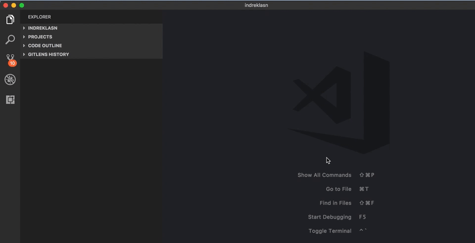
Material Theme
Самая эпичная тема для Visual Studio Code:
https://marketplace.visualstudio.com/items?itemName=Equinusocio.vsc-material-theme
Автоматически находит, парсит и дополняет названия методов и событий для всех доступных файлов. Поддерживает Typescript и TSX.
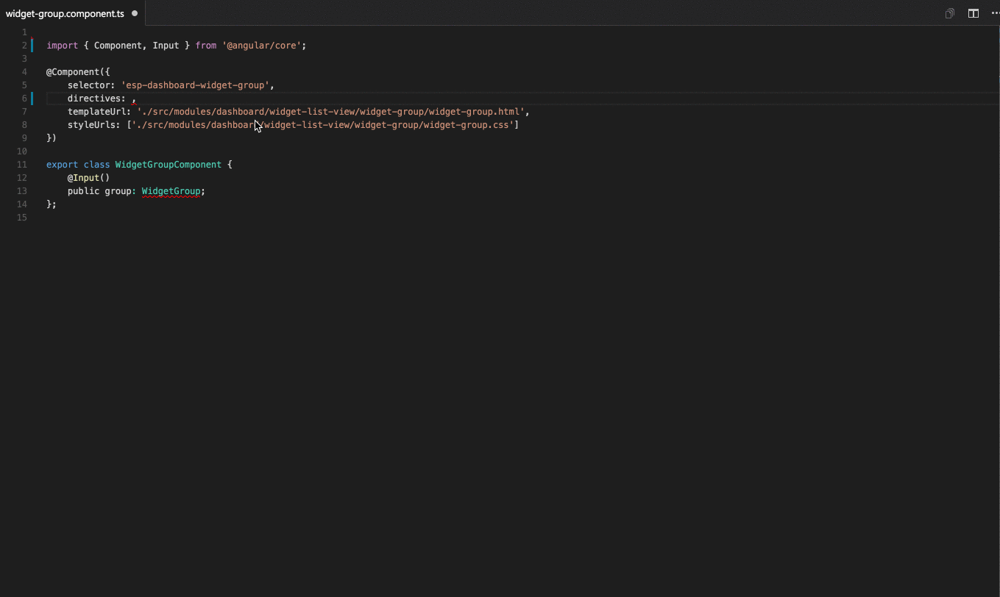
https://marketplace.visualstudio.com/items?itemName=steoates.autoimport
Это расширение отобразит в редакторе размер импортируемого пакета в одной строчке с соответствующим методом. Расширение использует Webpack с babili-webpack-plugin для обнаружения импортируемого объекта и оценки его размера.
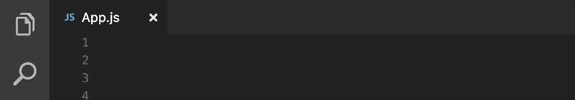
https://marketplace.visualstudio.com/items?itemName=wix.vscode-import-cost
Простое расширение, которое делает отступы более читабельными.
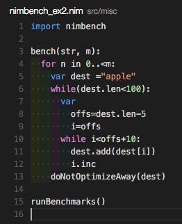
https://marketplace.visualstudio.com/items?itemName=oderwat.indent-rainbow
IntelliSense for CSS class names in HTML
Расширение VSCode, которое автоматически дополняет название CSS-класса для HTML-атрибута class на основе определений, найденных в вашей рабочей области или внешних файлов, на которые ссылается элемент link.
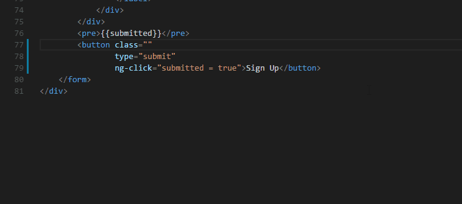
https://marketplace.visualstudio.com/items?itemName=Zignd.html-css-class-completion
Простой способ предпросмотра SVG.
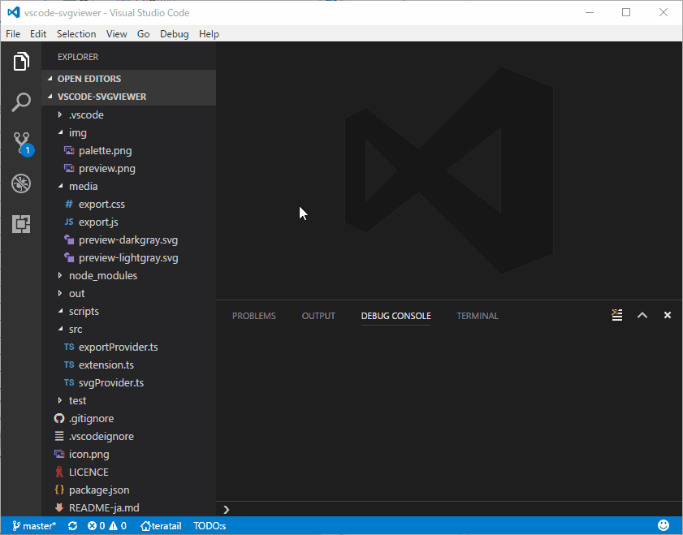
https://marketplace.visualstudio.com/items?itemName=cssho.vscode-svgviewer
Не могу жить без него — пакет VSCode для форматирования JavaScript / TypeScript / CSS с использованием Prettier.
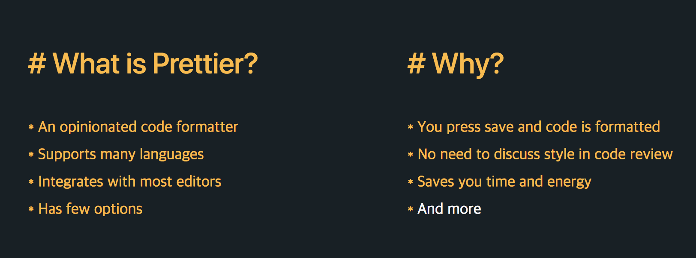
https://marketplace.visualstudio.com/items?itemName=esbenp.prettier-vscode
Подсказки, отладка и встроенные команды для React Native.
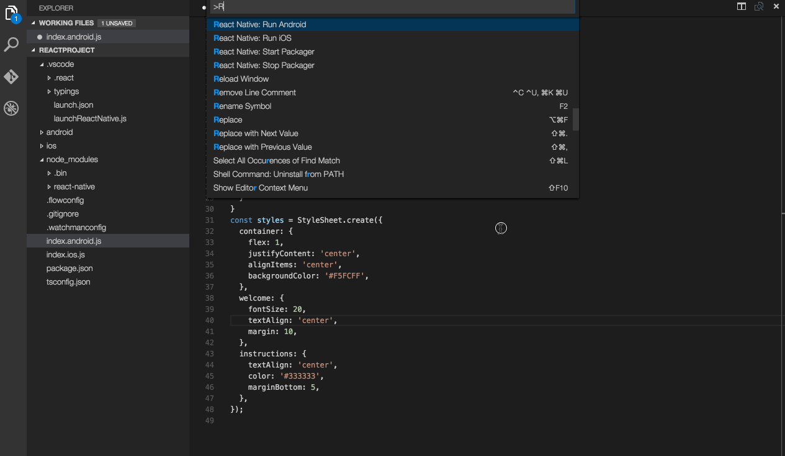
https://marketplace.visualstudio.com/items?itemName=vsmobile.vscode-react-native
Sublime Text Keymap and Settings Importer
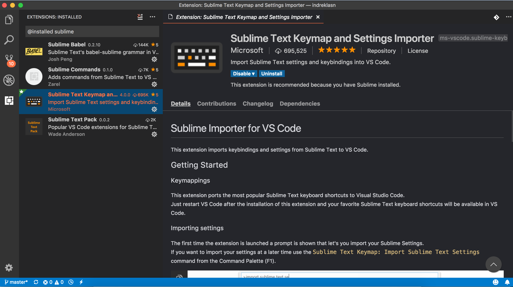
https://marketplace.visualstudio.com/items?itemName=ms-vscode.sublime-keybindings
Это расширение позволяет в VSCode использовать горячие клавиши Sublime Text 3. Попробуйте потестировать его, открыв консоль сочетанием клавиш:
cmd ⌘ + P— Mac
ctrl + P— Windows
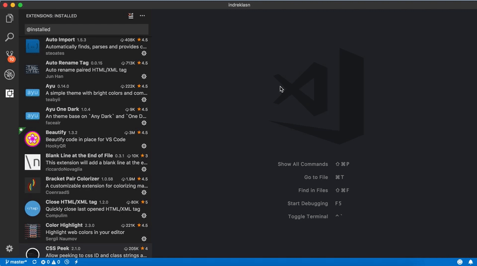
В этой консоли можно быстро перейти к файлам, а также, если добавить символ > перед поисковой строкой, можно искать действия, такие как переключение встроенного терминал, установку расширения и так далее.
Очень удобная штука для тех из нас, кто привык к ST3. 🎉
Плагин VSCode, который автоматически дополняет имена модулей npm в операциях импорта.
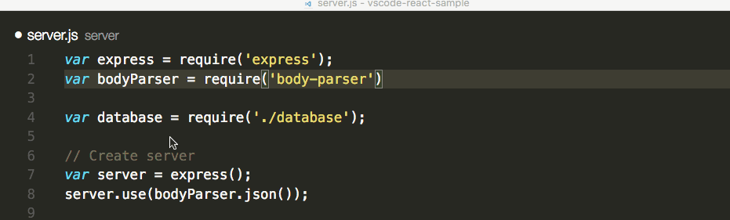
https://marketplace.visualstudio.com/items?itemName=christian-kohler.npm-intellisense
Добавляет подсветку синтаксиса и поддержку разметки HTML внутри строк JavaScript и TypeScript, как это используется в lit-html и других фреймворках.
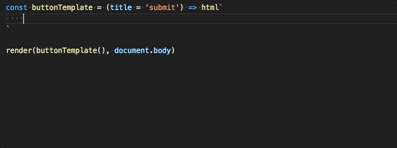
https://marketplace.visualstudio.com/items?itemName=bierner.lit-html
Это расширение предназначено для подсветки парных открывающих или закрывающих тегов — функциональности, отсутствующей в VSCode, но которая должна бы быть встроена в редактор из коробки.
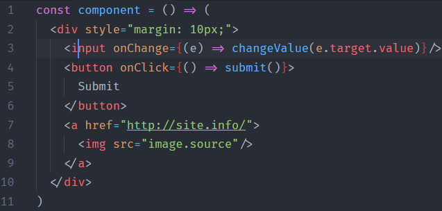
https://marketplace.visualstudio.com/items?itemName=vincaslt.highlight-matching-tag
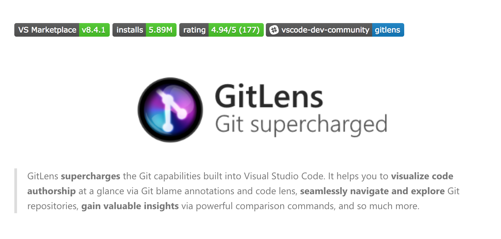
https://marketplace.visualstudio.com/items?itemName=eamodio.gitlens
Это расширение перезагружает встроенные возможности Visual Studio Code по работе с Git. Оно в наглядном виде предоставляет информацию об авторстве изменений в Git, а также облегчает перемещение по репозиториям и позволяет отслеживать историю изменений файлов или веток, использовать команды сравнения кода и многое другое.
Git Project Manager (GPM) — это расширение Microsoft VSCode, которое позволяет вам открыть новое окно на основе git-репозитория непосредственно из VSCode.
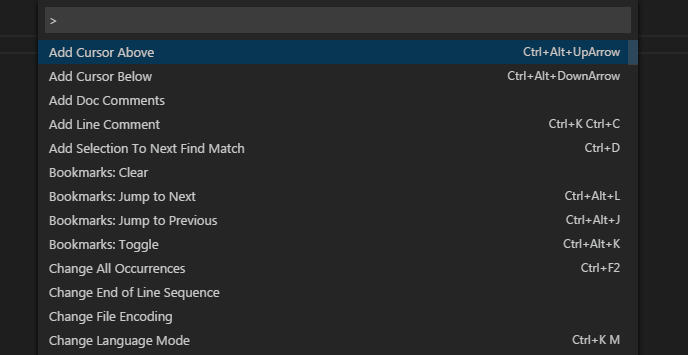
https://marketplace.visualstudio.com/items?itemName=felipecaputo.git-project-manager
Просмотр логов git и истории изменения файлов и сравнение веток или коммитов.
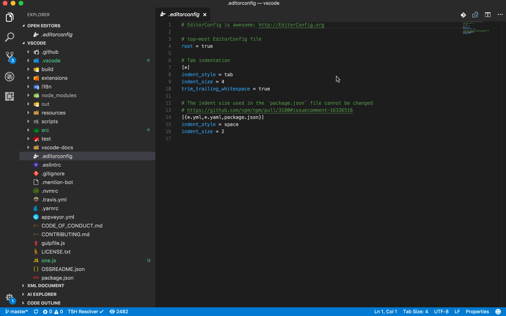
https://marketplace.visualstudio.com/items?itemName=donjayamanne.githistory
Удобный способ создания, дублирования, перемещения, переименования и удаления файлов и каталогов.
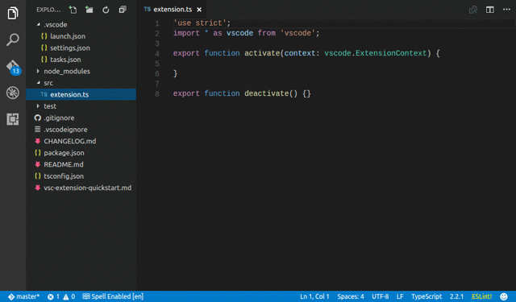
https://marketplace.visualstudio.com/items?itemName=sleistner.vscode-fileutils
Настраиваемое расширение для раскрашивания парных скобок. Крайне полезно при работе с большим количеством обратных вызовов.
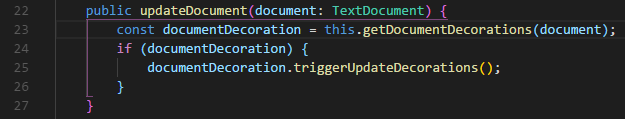
https://marketplace.visualstudio.com/items?itemName=CoenraadS.bracket-pair-colorizer
Это расширение подсвечивает CSS / веб-цвета, найденные в вашем документе.
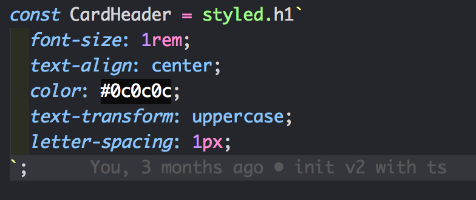
https://marketplace.visualstudio.com/items?itemName=naumovs.color-highlight
Переход к CSS-свойствам идентификаторов (id) и классов непосредственно из файлов HTML. Поддерживает переключение и между файлами и быстрый переход из одного в другой.
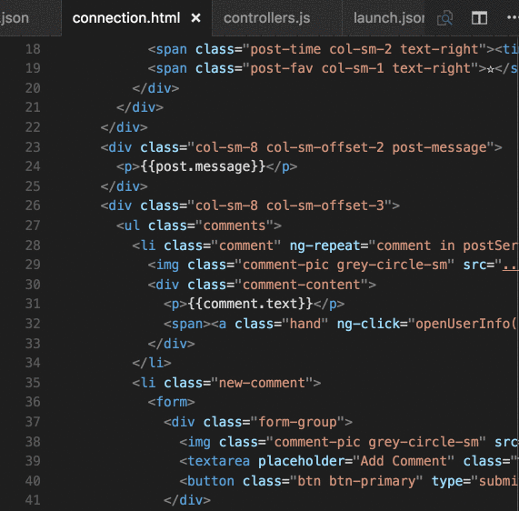
https://marketplace.visualstudio.com/items?itemName=pranaygp.vscode-css-peek
Инструмент для отладки JavaScript-кода или любого другого кода в браузере Chrome.
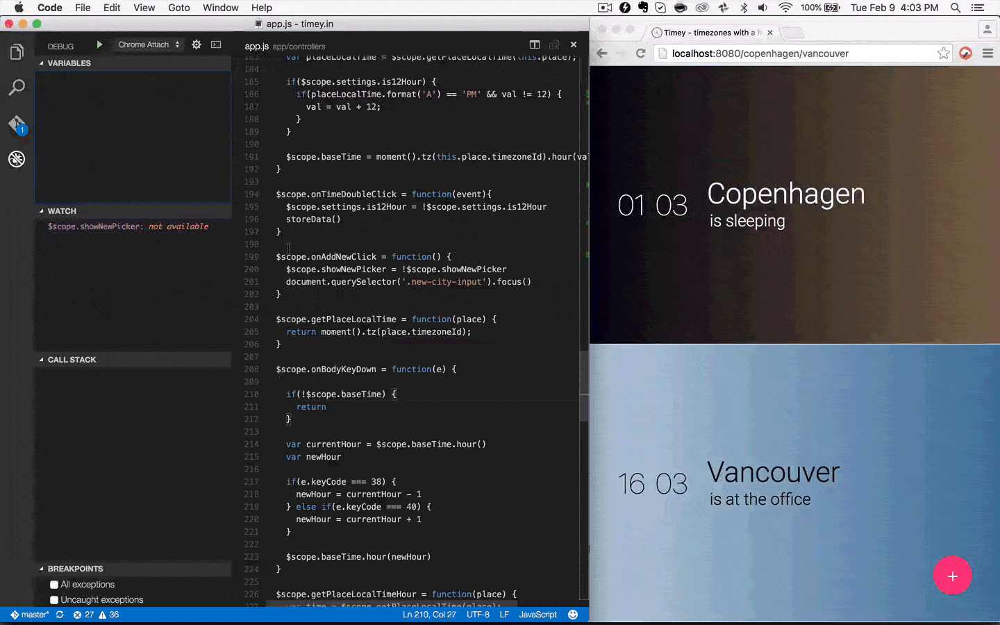
https://marketplace.visualstudio.com/items?itemName=msjsdiag.debugger-for-chrome
Выполняет JavaScript-код в консоли параллельно с тем, как вы его пишете. (Полезно для быстрых демонстраций).
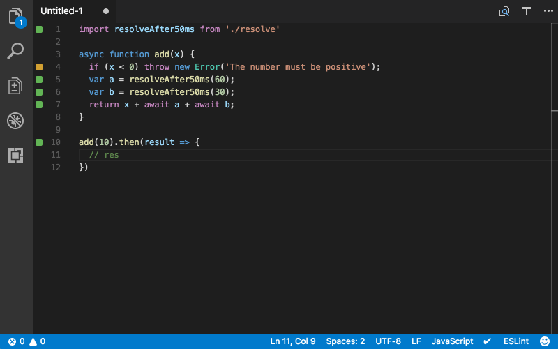
https://marketplace.visualstudio.com/items?itemName=WallabyJs.quokka-vscode
Мгновенно выделяет и удаляет конечные пробелы.

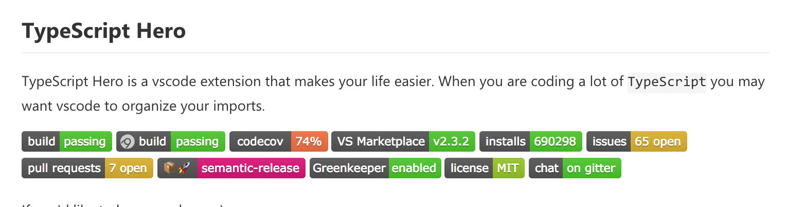
https://marketplace.visualstudio.com/items?itemName=rbbit.typescript-hero
Это расширение пригодится всем, кто пишет на TypeScript и хочет, чтобы VSC организовал импорты за него.
Метрики, инсайты и отслеживание времени, автоматически генерируемые на основании статистики вашей работы по программированию.
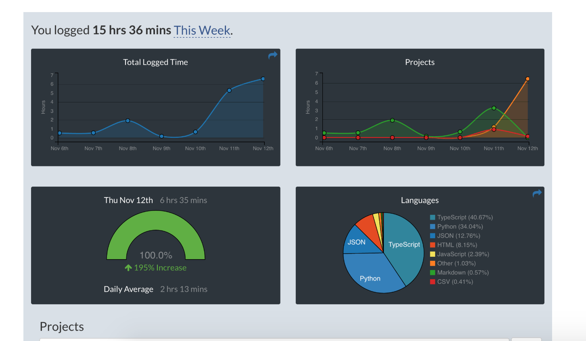
https://marketplace.visualstudio.com/items?itemName=WakaTime.vscode-wakatime
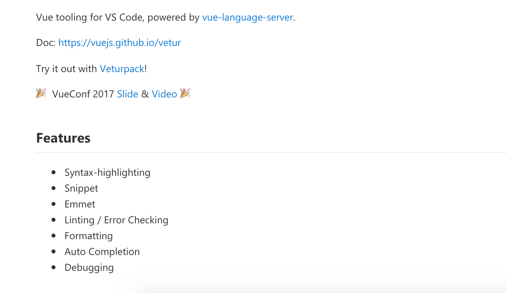
https://marketplace.visualstudio.com/items?itemName=octref.vetur
Запустите фрагмент кода или целый файл сразу в нескольких языках.
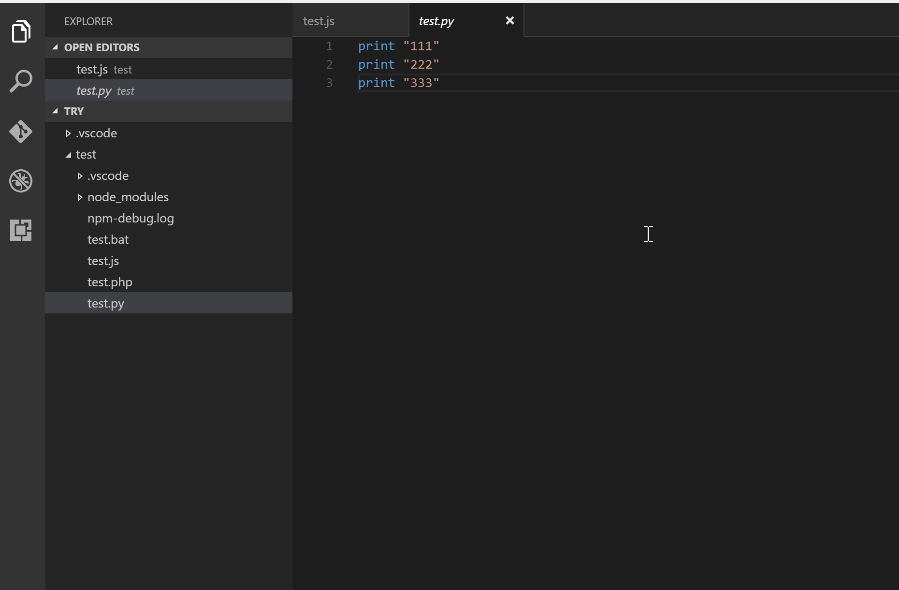
https://marketplace.visualstudio.com/items?itemName=formulahendry.code-runner
Расширенная поддержка автозаполнения и рефакторинга кода на PHP.
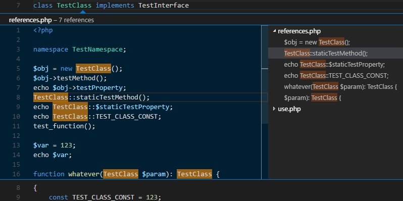
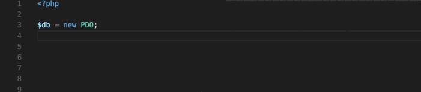
https://marketplace.visualstudio.com/items?itemName=felixfbecker.php-intellisense
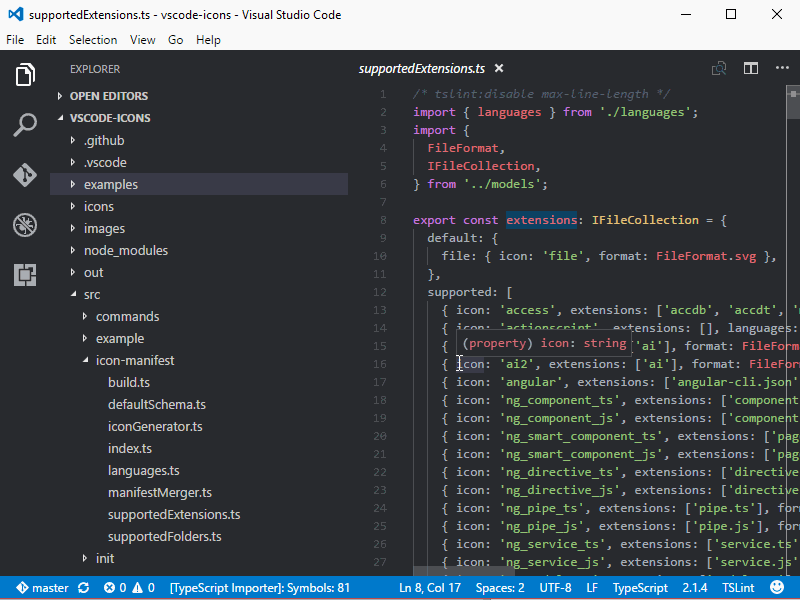
https://marketplace.visualstudio.com/items?itemName=robertohuertasm.vscode-icons
Пользуйтесь Jest от Facebook с удовольствием.
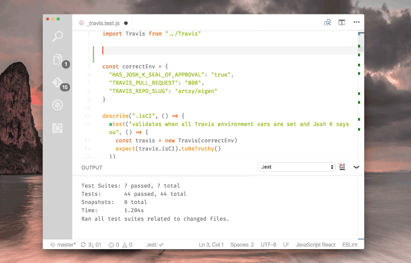
https://marketplace.visualstudio.com/items?itemName=Orta.vscode-jest
Сниппеты кода для разработки на React.js в синтаксисе ES6.
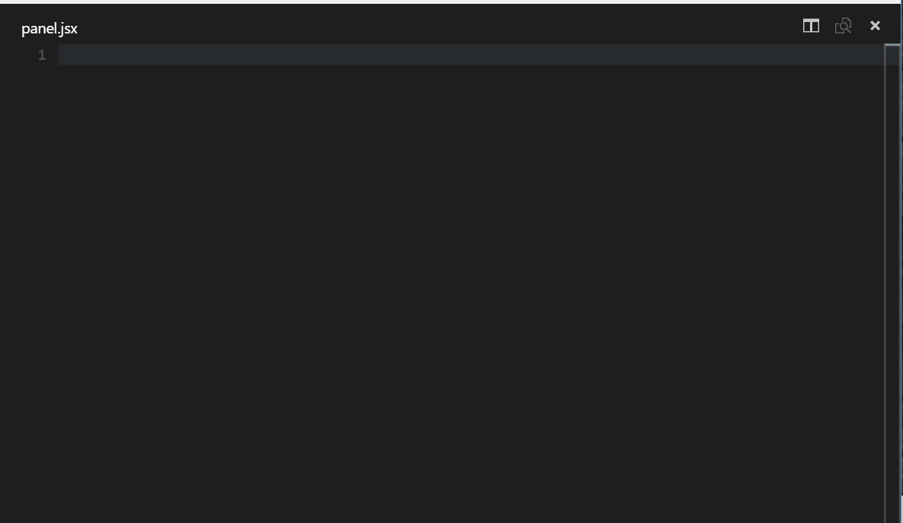
https://marketplace.visualstudio.com/items?itemName=xabikos.ReactSnippets
Благодарю вас за то, что прочитали эту статью! Переходите по ссылке в твиттере, чтобы узнать о других расширениях VSCode. Знаете еще какие-то полезные плагины, которые не упомянуты здесь? Пожалуйста, пишите их в комментариях❤
Если статья оказалась полезной для вас, не забудьте поаплодировать оригиналу и переводу. Вы также можете подписаться на твиттер автора , где он часто публикует другие полезные подборки.